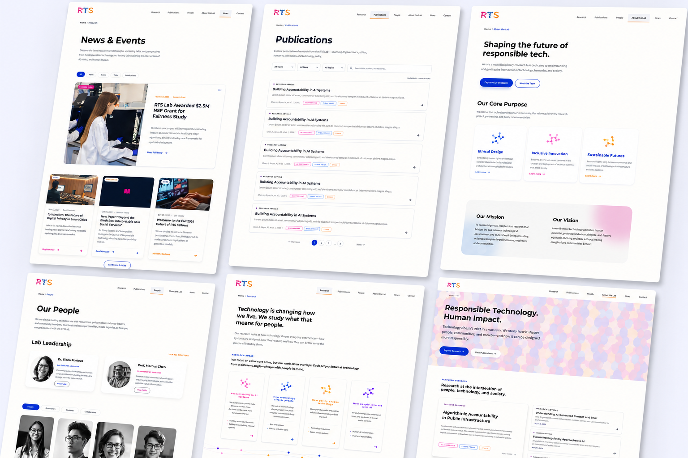
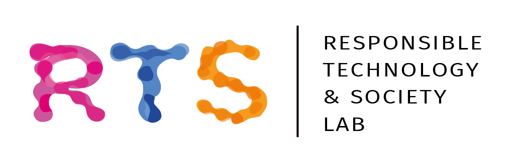

Strategy over safe design
A direction we could stand behind, not one that blends into every other lab's branding.
← My works/ 01
Brand identity & UX/UI · 2025 – 2026
This lab does research that actually matters, but you'd never know it online. As Team IGNIS, we built their brand and digital presence from scratch.

The problem
No real identity, an outdated site, and nothing that made people trust what they were looking at.
What we did
A brand built from the ground up: guidelines, a UI system and a working prototype, so their work finally looks like what it is.
We partnered with the Responsible Technology & Society Lab, a research group studying how AI, automation and digital systems are reshaping society. Their work was solid, but their website didn't show it.
There was no real visual identity, and the site looked like it hadn't changed in years. People had a hard time finding them, and when they did, nothing on the page told them to take the research seriously.
They wanted a full brand and digital experience, one that could speak to researchers, students, industry partners and policymakers all at once.
A direction we could stand behind, not one that blends into every other lab's branding.
A visual language that makes “responsible tech” feel relatable, not just a research topic.
Imagery for the people affected by these systems, not only the researchers studying them.
Logo, guidelines, real UX research and a working prototype for desktop and mobile.
Before we opened Illustrator, we looked at five similar research labs. Most felt cold, or just visually inconsistent. None of them felt warm and organized at once, so that's what we went after.
“For researchers, students and policy-facing partners, the RTS Lab makes complex technological systems more understandable, ethical and socially relevant.”
Our positioning statementEveryone on the team brought three concepts of their own to critique. Instead of picking one winner, we pulled pieces from three directions and merged them into Loop Layers, the one that shipped.


The custom letterforms repeat the loop motif through overlapping shapes. Fira Sans carries the mark itself, while Montserrat and Source Sans Pro handle everything else. Flip through the full brand guidelines below.
We built three personas, a PhD researcher, an AI ethics faculty member and an undergrad CS student, and used what each of them needed to shape every navigation and content decision on the site.


Scroll sideways →
Mapping how people moved from discovery to research to contact showed us exactly where they got lost, especially around publications and figuring out how to get involved. That became a six-section sitemap built around what people were actually looking for.


Scroll sideways →

Logo files, guidelines and prototypes, not just concepts in a slide deck.
Logo system, color, typography and guidelines across print and digital.
Personas and journey maps grounded in how researchers, faculty and students use the site.
Sitemap and wireframes for six core sections, shaped by research.
Full desktop and mobile flows in Figma, with the brand applied throughout.
Reflection
I was designing and project-managing at the same time, which taught me how much communication matters. With five people pulling from different concepts and schedules, regular check-ins, clear feedback and over-communicating decisions mattered as much as any single design choice.
Next project · 02
SIGnature
Redesigning how families, students and tourists plan a visit to the Arizona Science Center.